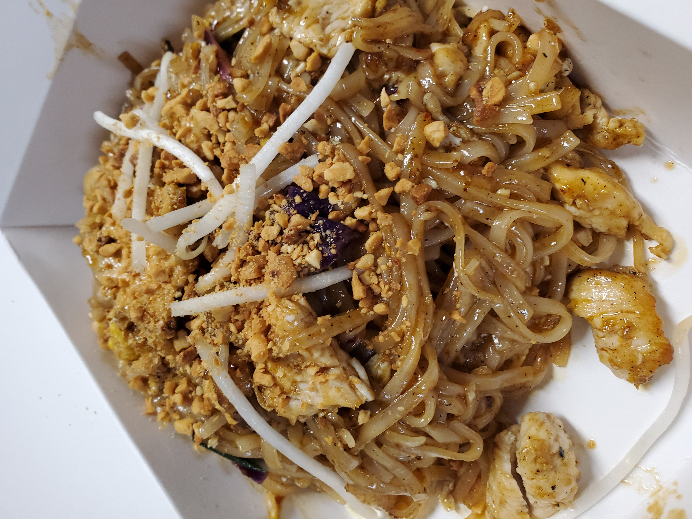

Ingredients: 4 OZ Dried Rice Noodle (1/4 - 1/2 inch)
2 TBSP Sugar
2 TBSP Fish Sauce
2 TBSP White Vinegar
3 TBSP Vegetable Oil
1/4 LB Chicken Breast (sliced thin, can sub fried tofu)
1 Egg
1 CUP Bean Sprouts
2 Stalk Green Onion (cut 2 inch slices)
2 TBSP Crushed Peanut
1 TSP Chile Powder
1 Lime
Preperation: 1. Soak the noodles in warm water for 30 minutes, until pliable enough to bend around a finger. (If you’re not using them immediately, you can drain the noodles and keep them in the fridge until ready to use.)
2. In a small bowl, stir together the sugar, fish sauce, and vinegar to make a sauce.
3. Heat an empty wok over high heat until it begins to smoke, then swirl in the oil. Once the oil is shimmering, add the chicken or tofu and stir-fry until the meat turns opaque but isn’t fully cooked, which should take about a minute (less time for shrimp—they will cook a little more quickly). Add the noodles and sauce, then continue to stir-fry, constantly stirring, until the noodles absorb the sauce, about another minute.
4. Use your spatula to push aside the noodles and leave them there, making an empty space in the center of the wok. Crack the egg into the empty space and let it cook until the edges start to set, 15 to 20 seconds. Use the edge of your spatula to break up and roughly scramble the egg, then toss it back in with the noodles while the egg is still soft. Once the egg looks mostly cooked, remove from the heat and throw in the bean sprouts and green onions, tossing thoroughly to combine. Transfer to a plate and garnish with the peanuts, chile powder, and lime wedge.
